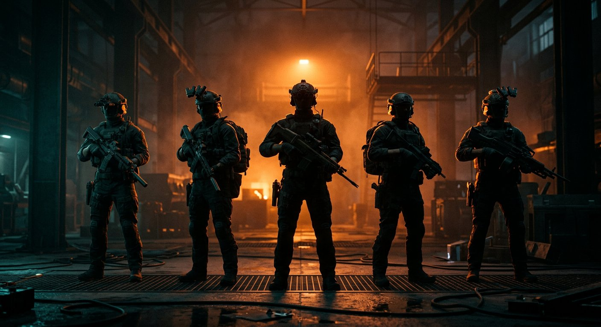

Tier list
Instantané du 2026-11-15, après la mise à jour d'équilibrage du 12 novembre. Et un éditeur pour composer la vôtre.

Classement par mode
Hazard Operations (extraction PvPvE)
Adreno-Boost sur 20 m reste le meilleur buff d'escouade du jeu.
Intel la plus propre, marquage à travers les murs, valeur universelle.
Signal Decoder à 90 s de cooldown + Silent Step.
Plus gros gagnant d'Aurora : Cryo-Flask 7 PV/0.5 s (contre 4) et cooldown 45 s (contre 55).
Hitbox du Sonic Trap restaurée.
Clover détecte au son mais subit 2x dégâts des munitions niveau 6+ en Operations.
Toujours excellent comme SEUL Nox de l'escouade (25 s).
B provisoire : une charge bruyante dans une pièce inconnue peut coûter tout le kit.
Les buffs Aurora étaient Detonation-only ; nerfs Meltdown toujours actifs.
Havoc Warfare (combat interarmes 32v32 / 64 joueurs)
Buff Clover tous modes sans la pénalité munitions d'Operations.
Sonic Trap restauré + réparation de véhicules.
Ancre les pushs, mobilité inégalée sur grande carte.
A provisoire : une charge à réduction frontale dans un point vaut beaucoup quand on respawn si ça échoue.
Cryo-Flask Warfare 8 → 10 PV/0.5 s, ralentit aussi la maniabilité des véhicules.
Passif renommé Revenant ; peu adapté à 64 joueurs.
Conçu pour la défense d'un couloir unique, se perd sur une grande carte.
Composez votre tier list
Glissez les opérateurs dans les rangs. Au clavier : focus sur un opérateur puis flèches haut / bas. Votre classement est sauvegardé localement dans votre navigateur.
Meilleurs picks en solo
Trouver l'autre escouade en premier EST le jeu solo.
Signal Decoder 90 s + Silent Step.
Le cap d'empilement ne s'applique pas : 25 s de Silent Assault complètes.